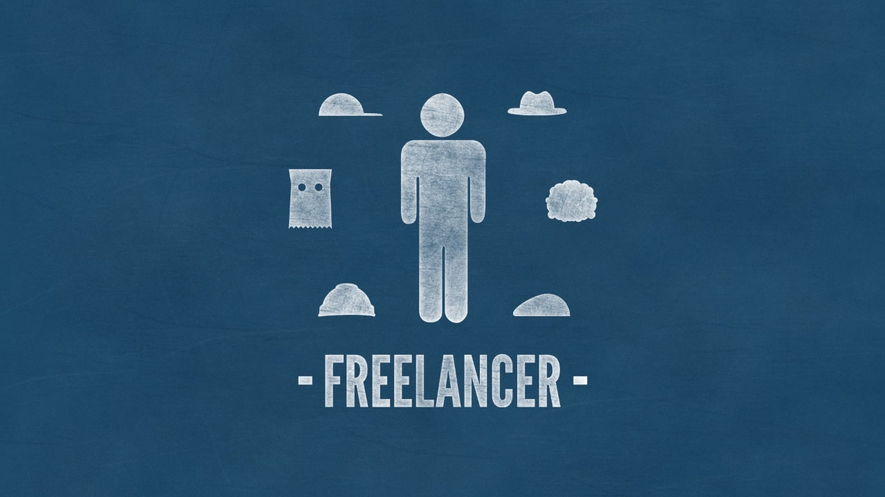
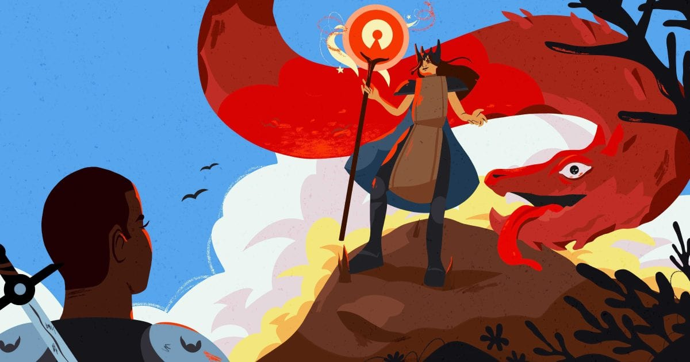

2022 年第三季度总结
这里记录下第一季度自己的一些想法，为了日后翻阅方便！
- 七月
- 幸运表面积
- 上午？下午？还是晚上？
- 互联网最喜欢的行为模式
- 一颗有限星球的能源和人类的欲望
- 未来世界将会分成两种人
- 活埋和生葬
- 八月
- 佩洛西访台
- 自带电池的人
- 把时间当作朋友
- 开发感悟
- 九月
- 俄罗斯入侵乌克兰
- 三维
- 我想怎样做个人产品
- 时间的力量：坚持，投入与成果
- 重来
七月
80 亿人意味着有 80 亿个机会过上有尊严、充实的生活。
每年的 7 月 11 日为世界人口日（World Population Day）。1987 年 7 月 11 日，地球人口达到 50 亿。为纪念这个特殊的日子，1990 年联合国根据其开发计划署理事会第 36 届会议的建议，决定将每年 7 月 11 日定为“世界人口日”，以唤起人们对人口问题的关注。

一 幸运表面积
随时随地分享你的感受和力量
Jason Roberts 在 How to Increase Your Luck Surface Area 这篇文章中提到了 Luck Surface Area（幸运表面积）的概念，他指出：
- 任何一种专业技能都是有价值的
- 这种价值可以被意识到它的人的数量所放大
并抽象出了一个公式：Luck = Doing Things * Telling People。你做的事情越多，告诉的人越多，你的幸运面积就越大，你的幸运面积越大，就越有可能在运气流过的时候抓住它。所以，我们在学习到东西的时候，立马写了笔记分享出来，完成了一定量的积累后，复利的力量是非常惊人的。
二 上午？下午？还是晚上？
我非常贪恋睡眠，因为我每天都会做梦，并且第二天起来，我几乎都记得自己做了什么梦。无论是好梦、荒诞的梦、还是噩梦，我都会贪恋其中不愿意起床，它们仿佛短暂的解开了我的脚铐手链，让我飞了一会，飞到了一个和我的真实生活完全不一样的世界。
如果我放任自己开始苏醒，真实生活里的点点滴滴，就会像早晨洗脸被拧开的水龙头的水一样，涌入大脑还泄流不止。一睁开眼睛就开始思考真实生活，真是一件悲伤的事。所以当我不得不起床之后，我总会尽我所能留住那种和现实脱节的感觉，能留多久是多久。能暂时不展开真实生活的点点面相，就暂时不展开。
这种不展开的方式，于我而言就是阅读、纯粹的写作、或者看电影。阅读，是掉入另一个人的大脑去看 TA 写出来的世界；写作，是掉入自己的思想，内观自己的思绪世界；有时我也会一起床先看一部电影。电影，啊，电影，那就是另一个人的故事了，与我完全没有关系的陌生人的生活。这些都是逃离，让我暂时不必被真实生活的清单事项所淹没。
也因此，我的生活在某个节点，被分割成了「之前」和「之后」，这个节点的划分，于我而言就是开微信：查收微信消息的那一刻，就代表着我被拉回现实，开始需要处理跟真实生活息息相关的消息、通知、事项。我上午从不开微信，一般看微信都是下午 1 点后了。当然，这种回归现实的方式，也是循序渐进式的：1 点前后，我会第一次开微信，只是纯粹接收消息，确认无要紧之事后，又立刻关闭微信。直到下午 3 点我的微信才正式处于常开状态，表示我正式接受来自真实生活里清单事项的随时打扰，繁碎日常正式拉开序幕。
我现在颇享受这种隔离时段式的生活节奏，3 点之前专注创作，3 点之后回归生活，「回归」这个词已经说明，我刻意与真实生活保持距离的个人态度。我的一天于是就这样拥有了两幅面孔：上午，是流离于真实生活的异想世界，下午，是落地于真实生活的现实世界。
三 互联网最喜欢的行为模式
主动出击，方能制胜！
巴菲特说，他考察候选人，就看 三个”i”。”正直”（integrity）和”智力”（intelligence）比较容易想到，大多数人会忽视第三点”主动”（initiative）。可是，主动恰恰是互联网最喜欢的行为模式。
integrity（正直）intelligence（智力）initiative（主动）
线上世界不是这样，限制条件比较少。只要技术可行，一般来说，就可以去做。如果你还在等待条件成熟，就会错失机会。 所以，想到就去做，在互联网上特别重要，这就叫主动。
举例来说，找工作，大多数人想到的是下面两种方式。
- 方式一：看到招聘广告，投递简历。
- 方式二：认识某个内部人员，请他内推。
这两种方式都有一个前提，就是你碰巧知道这家公司要招人了，然后再去应聘。
但是互联网找工作，有另一种方式，完全可以主动出击。
- 第一步：你看到了一个心仪的产品。
- 第二步：你写下自己可以帮助改进这个产品的
10个地方。 - 第三步：你找到
CEO的信箱或社交账号，把想法发给他，就说你可以帮到这个产品。
这就是主动的行为方式。你不必等公司发布招聘岗位，如果想去那里工作，就找上门，展示自己的价值。在互联网上，没人禁止这么做，成本又这么低，那为什么不做呢？
主动和被动，很多时候说到底，就是对待机会的心态不一样。被动的心态是”机会来了，我追上去，抓住机会”，主动的心态是”我先亮相，创造机会”。”亮相”在互联网上特别重要，你不亮相，没人知道，你一亮相，大家都会知道。
如果你想在互联网领域发展，在我看来，最好的、风险最小的行为模式，就是 做出更多的代表作品和提升自己的手艺，主动去做，先亮相再说。 你的成果越多、越优秀，盲目的可能性就越小，主动出击的风险也越小。
四 一颗有限星球的能源和人类的欲望
应该将自己的光和热投入到有趣和有意义的地方！
加州大学的一个物理学家提出了一个无人问过的问题：如果人类继续以这种速度，生产和消耗能源，那会发生什么事？ 他后来写了一本书，叫做《一颗有限星球的能源和人类欲望》，网上免费下载。书里有详细的计算过程，感兴趣的朋友可以去看。
- 能源
他首先假定，全世界的能源增长率是每年 2.3%。这样比较容易计算，这个速度正好等于每一百年增长 10 倍。以这个速度，一百年后的 2122 年，全世界的能源是今天的 10 倍；两百年后的 2222 年，是今天的 100 倍。那么，问题就来了。人类怎样才能在两百年内，将能源扩大到今天的 100 倍？
- 热量
物理学告诉我们，能量只要做功，就必然会产生热量。人类消耗越来越多的能源，不可避免会产生更多的热量，地球的散热问题也就越来越严重。 地球主要通过红外线，向宇宙空间辐射散热。但是，温室气体的增长，阻碍了红外线离开大气层，越来越多的热量因此留在了地球表面，使得全球变暖。人类产生的热量越多，留在地球表面的热量也就越多，温室气体让这个问题变得更严重了。所以，全球变暖的程度与人类的能源消耗是正相关的。
2020 年，全球的平均气温约为 14.9℃。如果能源增长率保持 2.3%，350 年后，全球平均气温会达到体温 37℃，450 年后达到水的沸点 100℃，750 年后达到钢铁的熔点 1500℃，950 年后达到太阳表面的温度 5500℃。
- 总结
这就是人类面临的严峻局面：能源增加，导致气温上升；气温上升，又需要更多的能源来降温，从而形成恶性循环。人类的能源增长期，可能只剩下未来一百年了。人类社会如何在这么短的时间内，一边经受全球变暖，一边实现经济转型，减少能源消耗，实在是一条不乐观的未知之路。
五 未来世界将会分成两种人
逃离克隆岛
https://codechina.org/2022/10/two/
今天人类并没有那么辛苦就可以吃饱穿暖，当然精神压力可能是越来越大了。所以，一边很多人觉得自己越来越忙，而忙的不知道在做什么。
另外一方面，其实花费了你最多的时间，往往不是跟工作有关系的应用，而是那些碎片化的社交和娱乐应用。不管是抖音多少次的删除和卸载，还是朋友圈多少次的开启和关闭。
我们需要碎片化社交和娱乐，因为实际上现在大多数人都很空虚。需要表面上很忙，但是很多时候，一天真正需要高效率工作的时间有 2-3 个小时足矣。你不是在等待甲方的信息，都是等待领导的意见，要么就是等待同事的进度，要么就是等待你那好久也不来的灵感和好心情。所以，你需要碎片化的社交和娱乐来打发等待时的空虚，已经大量的无脑的娱乐来抚慰你不快乐的心情。
但是多少碎片化的社交和娱乐都无法真正解决空虚和不快乐的心情。这就是一种代偿机制而已，就像生活和学业一团遭的人可能会迷上赌博、游戏、毒品，但是这些东西，并不能解决生活和学业上的问题，反而会带来更多的问题一样。
于是人们越来越异化，越来越喜欢短的，刺激的，直接的东西。所以，微信朋友圈里面你只点开标题党，看了看毫无影响，你骂了句标题党，然后点开另外一个标题党。所以，你迷恋上了在抖音上看各种小姐姐扭来扭去，你迷恋上了各种三分钟讲电影，讲电视，讲书。然后，你没有发现你默默的进入了到了流量的陷阱和信息的泡泡里面。
我们今天是为了排解空虚无聊寂寞冷，为了缓解不开心，主动的接受不断的碎片内容的洗脑。这些碎片内容的生产者的唯一目的是让我们上瘾，让我们不断想继续消费这样的内容。这其实就是新时代的娱乐至死。这就是大多数人的宿命。
但是，这个世界还是会有另外一种人。他们当然也知道即时的感官刺激，短平快的信息，好懂的信息，有其魅力所在。但是他们仍旧喜欢去做深度阅读、喜欢去看完整的电影，完整的电视剧，追求一手信息，而不是吃别人嚼碎的馍。慢慢的这就分成了两个完全不同的两类人。
实际上的，信息不对称是永远存在，无法解决的。人类社会无数次试图去解决这个问题，但是信息不对称仍旧会长期存在，现在表现为碎片信息被洗脑者和深度信息吸收者的信息不对称。
至于你想做什么，我觉得仍旧是一个自由的选择。你当然可以选择轻松的，简单的，快乐的沉浸在碎片化信息的海洋里的快感。你当然也可以选择，继续看书，写文字，深度学习，持续思考，痛并快乐者……
六 活埋和生葬
亲身经历了一次比死亡还可怕的死亡
今天看到一个故事：A 自己好朋友 B 的微信号被封了，由于 B 表现的过于抓狂，A 也是过于好奇，于是将 B 发的文字原封不动的发在了朋友圈，大概不到五分钟收到了一条通知，账号违规永久封禁。
收到这条通知时，这意味着什么呢？首先，你无法发送任何消息，不仅仅聊天朋友圈，哪怕点个赞都不行。你无法跟这个世界进行任何互动，这也意味着在这个世界你已经 “死” 了。
而更可怕的是，你死了世界以为你还活着。世界依然可以正常的向你发送消息，所以在世界眼里你没有任何异常，但是你无法回复消息。世界依然可以向你打视频打语音通话，但是接通后对面听不到你的任何声音。一切的一切，为了伪装你依然活着他们尽善尽美，就是不愿意告诉世界一声你已经 “死” 了。
社会学对人的定义是人一切社会关系的总和，而微信定义的死就是断绝一切社会联系，微信的确很哲学。作为一名微信用户我尊重微信对账号使用做出的规定，但哲学家首先是人，人都死了还向他的亲友伪装这个人活着，怎么看都不是人应该做的。
八月
愿天天是七夕，岁岁共婵娟。
我不相信星移或是日转，我不夸口来生或是永远，我不需要海枯或是石烂，我不贪心更不霸占，我只要好好地珍惜爱着你的每一天。一颗爱你的真心，盼此生与你相恋不变。
一 佩洛西访台
没有底线的永远都是政客，走在分岔路口的人！
佩洛西为了所在政党今年的中期选举，仍有意挑起大陆和台湾的冲突。虽然在提前正式公布的行程里没有台湾，但还是在 8.2 晚上 10 点专机改变行程，降落了台湾，并于次日 17 点离开。
经过这一次事件，愈发感受到政治人物的自私，为了选举，就不惜挑拨远方两个地区的冲突，甚至引发他们的战争。对于他们而言，远方的战争都仅仅是手中的筹码，而不是一条条鲜活的生命。
中国大陆还是很克制，并没有发动军事冲突，以军事演习和经济制裁收场。擦枪未走火，一度发绿的股市也回弹了。
二 自带电池的人
“我曾雇用过许多聪明、有才华的人，他们有很好的简历……但感觉他们好像缺少一个电池组。自带电池的人努力工作、有胆识和热情。你应该雇用自带电池的人，这超级重要。”
什么是自带电池的人呢？那些不需要他人提供能量，独立完成任务，不拖后腿，不制造麻烦的人，就是自带电池的人。Tinyfool 曾经在播客里疯狂夸他雇的一个员工，说小伙子没有文凭，自学成才，但厉害的是，每当扔给他一个模糊的功能概念，哪怕他不知道怎么解决，他会先试试看，自己钻研新的技术，然后很快拿出一套不错的方案。这时相对应的，没有电池的人会怎么做呢？他们会抱怨需求不切实际、背后说老板闲话、抱怨公司抱怨同事、一直需要人盯着才能干活。
我想说的是，不是每个人都有雇佣员工的需求和机会，但生活中，我们可以做一个自带电池的人，乐观积极，承担责任。同时，尽量回避那些没有电池的人。我们愿意为他人提供能量，但别让他们的能量黑洞，吸干我们。
三 把时间当作朋友
programmer 的时间管理，就是如何把时间当作朋友。- 链接
这周看了我总觉得一个人呆久了，有时候很容易 lost track of your surroundings。自己预想的生活和现实产生了越来越大的 gap，预期管理的测不准区间越来越大。在那个无论做什么都是成长的时期，生活总是有一个又一个的盼头等着我。但是那个奢侈的高涨期已然过去，我最后还是落入一个越来越糟糕的年代，很难提醒自己时间的意义是什么。
我觉得长期换 base 工作给我的启示有点像是这样的：生活的本质是带着镣铐跳舞，一边接受毒打一遍享受生活，一边一头扎进这个世界最冰冷的一面。Breaking change 可以来，但是世界与人达成平衡的一个要义，就是变化应该是自然的。我们紧随着世界的时间线跑动，然后又熄灭。
我突然又怀念起那种反骨的“数码朋克”的人。他们的内核总是很强大，能把一切东西解构成那么吓人的东西然后赋予意义，然后一整个拼起来，生活的一切枯燥的玩意儿在他们的眼里立即有模有样。这么看来这些人天生是有点做网红的潜质的。
四 开发感悟
“帮用户挣钱”，“帮用户提升效率，节省时间”。- 链接
一个月前，作者发布了OpenPrompt.co 这个 Side Project 项目，现在自己记录下现在的想法和关于未来的一些打算。
风口的体验
- 快乐：和一些做
ChatGPT相关产品的朋友交流，大家的普遍的感觉是，因为这一股风，不管你做什么，似乎总能收获很多用户。 - 焦虑：感觉产品就像一只风筝，虽然被吹的比较高，但是什么时候坠地，很大程度上是由风而不是自己决定的。同时每天看着不停有新的有趣的应用出现，感受各种
FOMO情绪。 - 思考：风是会停止的，大风之后呢？当
ChatGPT这个流行词变得普通，变得大众，什么东西会被留下？能否在这个热潮里面找到一些不会快速消退的东西？思前想后，不变的东西，还是经典的那两样，“帮用户挣钱”，“帮用户提升效率，节省时间”
- 快乐：和一些做
ChatGPT 意味着什么
- 一个数据库：传统的书籍，或者互联网，也可以理解为一个数据库。不过之前的挖掘方式顶多是搜索。而大语言模型，提供了一种新的挖掘方式。
- 一个聪明人：我们可以通过对话，向他讨教任何问题。并且随着技术提升，他的聪明程度也会持续提升。
九月
羁鸟恋旧林，池鱼思故渊。久在动物园，何时反自然。
中秋人团圆，一家人聚在一起赏月，真是个愉快的日子，看着空中圆圆的月亮，你是否会问：中秋节的月亮是否跟其他日子中的有所不同呢?

一 俄罗斯入侵乌克兰
曾经沧海难为水，除却巫山不是云。
乌克兰官方出了一个官方网站，用于向世界各国的人展示 俄罗斯入侵乌克兰 这一事件，最近该网站推出了中文版本。其中包括，如何帮助乌克兰、乌克兰的局势、俄罗斯战争罪行，等等。
讲道理，除非是因为原则上面不可避让的原因，入侵另一个国家，都是非常不明智的决定。一方面会让本国和战争的人民都陷入于水深火热之中，另一方面战争的害处用于大于利处，最终只不是过政客们玩弄世界的手段而已。
我时常在想，我们人类面对世界的未知和对应宇宙的探索，都在不断做出努力和尝试。但是，总有很大一批人在不断搞破坏，非得为了什么第一争得头破血流不可。现在的世界格局，简单理解，就好像是一个没有老师的班级一样。里面总有几个拳头硬、底子厚的刺头，总想着当老大，让大家都服服帖帖的听自己的话。拉帮结派，搞斗争，玩阴谋，使阴招，真的无所不用其极。换句话说，即便是你牛逼了，那就怎样呢？
如果之后数十年、数百年、数千年之后，如果真的有外星人入侵地球，如果真的地球的资源耗尽，如果真的环境彻底恶化，我们又该何去何从呢？我们难道不应该，动动我们聪明的脑筋来处理这些事情吗？让人非常费解，聪明的我们都在干什么呢？
我们面临，不应该是不断地国与国之间的内卷，而应该是面对未来的不断突破才对。每个人的人生都短短不过百年，不应该把最重要的时间和精力花费在更有意义的事情上面来吗？卒！
二 三维
一花一世界，一叶一菩提。- 链接
自己创业的这几年，见过很多各式各样的企业和老总，让对我的对世界的认识有巨大无比的帮助。目前我能理解的正规挣钱做生意到三维。一维就是低买高卖，哪怕是从原材料加工变成商品，也是在一根线上做生意，传统行业基本上都在这个维度上挣钱，一维空间的生意都太容易被竞争了
二维的买卖，会在商品的时间和空间上进行扩展，就像金融业一样，在“空间”上把储户的 100 块钱变成 500 块钱贷出去，不然就是在时间上扩展对未来进行消费，其实这个在技术上也一样，IBM 卖服务器是一维的生意，AWS 则是二维的……二维的生意，要牛逼的技术，调度，风控，规模……等
三维的生意，又会在空间和时间上再盖“一维”，这一维是啥，留给大家自己思考吧……我只是想说这个跟《三体》一样，你以为大家都是在挣钱，但是这种在维度的差别，才是可怕的，令人完全没法竞争，这也是超出大多数人认知之外的事情…… （我有这个认知也是在 10 年前有天在会议室听到了几个牛人的聊天）
三 我想怎样做个人产品
我想怎样做个人产品 - 链接
和很多打工人一样，个人开发也是我的理想。我有一个“想法清单”，从几年前就开始把想到的东西放进去，现在已经存了不少。当我开始认真地想这件事，我意识到相比做什么，先决定“怎么做”更加重要。因此我列了一下感觉比较重要的几点，一方面是定下基调以此来决定接下来要做什么，另一方面也想接收一些反馈，毕竟我也明白这些想法可能很幼稚。
- 做自己需要或者感兴趣的东西
- 作为一个兴趣导向的人，我很难逼自己用业余时间去做自己不感兴趣的东西。况且如果自己喜欢，应该也能找到有相同想法和喜好的人。
- 让人们的生活或者这个世界变好
- 即使只有一点点，起码不能变坏
- 低维护成本
- 考虑到我有全职工作并且暂时不打算辞职，必须保证项目能以低成本维护
- 时间/脑力/金钱
- 考虑到我有全职工作并且暂时不打算辞职，必须保证项目能以低成本维护
- 明确目标
- 既要又要是困难的，因此需要在开始前就明确目标。我觉得可能有以下几个维度：
- 技术验证
- 给自己省时间
- 公益
- 赚钱
- 既要又要是困难的，因此需要在开始前就明确目标。我觉得可能有以下几个维度：
- 不需要投资 (self-funded)
- 至少在需要
scale up之前
- 至少在需要
- Start small
- 从小做起：从简单、容易的任务开始，逐步发展和扩大。
四 时间的力量：坚持，投入与成果
在任何一个群体里面，如果你积极努力，你会发现你的效率是大多数消极磨时间的人的百倍。
最近两年我的女儿的学习成绩也很差。一开始我也怀疑过她的智商，显然她也许没我聪明。但是辅导过几次她的作业我发现，其实初中高中的课程真的谈不上对智商有那么高的要求。
上数学课，你可以呼呼大睡，上物理课你也可以呼呼大睡，考试自然也就折戟沉沙。因为这些公式，怎么求导，不是你脑子太笨想不明白。而是你上课就没去，听都没听说过，自然无从下手。
我发现，很多人的成绩不好，跟智力无关，是上课根本没听。那么下课怎么写作业，怎么补习都很难提高。这本质上是说，在通常的情况下，如果你认真的学，投入在学习上的时间足够，一定可以学好。
一个基本的原理就是你把时间投入在哪里，你就可以获得什么样的结果。当然有天赋、学习方法、能力、等等各方面的差异。但是总的来说时间越多，结果越好是往往不错的。
五 重来
不要用”生产力”这个词评价程序员，因为它是评价机器的
“生产力”这个词，英文为 productive，它的高低用产品的多少来衡量。生产力高，就是同样的时间做更多的工作，或者同样的工作花费更少的时间。如果使用”生产力”评价一个人的价值，最终就一定变成追求更高的产出。这是没有止境的，机器可以 24x7 工作，人不能。
软件行业一直有一种说法，我们要招聘 10 倍生产力的程序员。它的言下之意，就是要招聘 10 倍产出的人，这种目标并不可取。当你强调生产力时，实际上是在强调，人必须始终忙碌。每一刻都有事情要做，而且总是有更多事情要做！ 因此，你会有做不完的工作，闲暇时间越来越少，工作压力越来越大。
程序员的真正目标，应该是”有效性”（effective）。你的劳动是有效的，切实完成了项目。当你把”有效性”当作目标时，只要有效完成了项目，你就可以停下来了。因此，你可以追求做更少的事情、用更少的时间达到目标，这样你会得到更多的闲暇和休息，这才是可持久的。
生产力目标（productive）占用你所有的时间，把你的日程排满，追求尽可能多的产出。有效性目标（effective）正好相反，它不追求添加更多的任务，而且减少那些不该做的事情。
如果有人称赞你，说你的生产力很高，或者公司以生产力作为考核指标。你可能需要小心，你有变成机器的风险。更好的称赞应该是，你的劳动很有效，很高效。